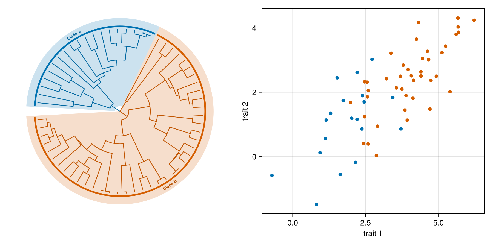
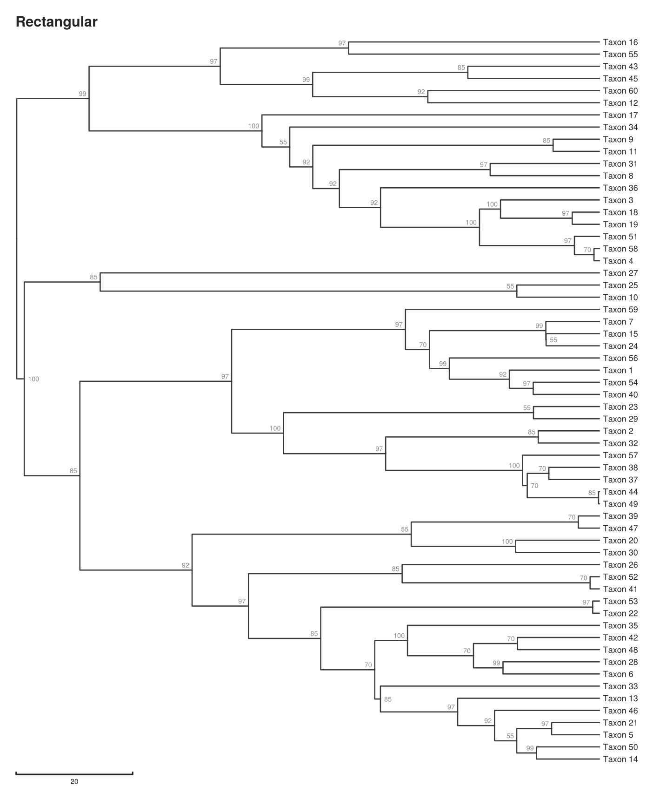

Makie
Loading any Makie backend enables phyloplot!, which draws a TreePlot into an Axis (one data unit = one px of the layout), and phylofigure, a ready-made Figure sized to the tree.
A tree beside a scatter plot of trait data, coloured by clade:
using CairoMakie, PlotPhyloTree, Random
rng = Xoshiro(7)
tree = randtree(60; rng, height=100, labels=["Taxon_$i" for i in 1:60])
ladderize!(tree)
clades = childnodes(tree, rootnode(tree))
colors = ["#0072B2", "#D55E00"]
p = treeplot(tree; layout=:circular, tiplabels=false)
highlight!(p, ["Clade A" => clades[1], "Clade B" => clades[2]]; colors, branches=true)
# trait values for each tip, shifted by clade
group = Dict(n => k for (k, c) in enumerate(clades) for n in tips(tree, c))
x = [randn(rng) + 2group[n] for n in tips(tree)]
y = 0.6x .+ 0.8randn(rng, length(x))
fig = Figure(size=(900, 450))
ax1 = Axis(fig[1, 1]; aspect=DataAspect())
hidedecorations!(ax1); hidespines!(ax1)
phyloplot!(ax1, p)
ax2 = Axis(fig[1, 2]; xlabel="trait 1", ylabel="trait 2")
scatter!(ax2, x, y; color=[colors[group[n]] for n in tips(tree)])
fig
A whole figure:
for i in internalnodes(tree)
setdata!(tree, i, :support, rand(rng, [100, 99, 97, 92, 85, 70, 55]))
end
q = treeplot(tree; title="Rectangular")
nodelabels!(q)
scalebar!(q)
phylofigure(q)